Hướng dẫn cách nộp các loại tờ khai, báo thuế GTGT, TNCN, TNDN qua mạng điện tử trên trang Dịch vụ công và thuế điện tử mới nhất năm 2026
Hiện tại, Cục Thuế vẫn đang duy trì song song 2 hệ thống: Thuế điện tử và Dịch vụ công
Trước khi tiến hành nộp tờ khai thuế qua mạng thì các bạn cần chuẩn bị những thứ sau:
Dưới đây, Công ty đào tạo Kế Toán Diệu Tâm sẽ hướng dẫn các bạn thực hiện nộp các loại tờ khai báo cáo thuế như tờ khai lệ phí môn bài, tờ khai thuế GTGT, TNCN, TNDN qua mạng trên cả 2 hệ thống: Thuế điện tử và Dịch vụ công
Bước 1: Truy cập vào trang https://dichvucong.gdt.gov.vn/
Bước 2: Đăng nhập tài khoản của doanh nghiệp bạn vào hệ thống
=> Nhập tên tài khoản và mật khẩu của công ty bạn vào hệ thống
=> Nhập Mã captcha
=> Bấm vào “Đăng nhập” để đăng nhập vào HỆ THỐNG THÔNG TIN GIẢI QUYẾT THỦ TỤC HÀNH CHÍNH
=> Doanh nghiệp có thể đăng nhập và thực hiện nộp tờ khai báo cáo thuế, tiền thuế điện tử trên cả 2 hệ thống này
để CQT có thời gian hướng dẫn, hỗ trợ doanh nghiệp làm quen
Sau thời gian triển khai, Cục Thuế sẽ ngắt kết nối hệ thống cũ, chỉ sử dụng 01 hệ thống duy nhất là: https://dichvucong.gdt.gov.vn (Đây là giao diện DUY NHẤT giữa Người nộp thuế (NNT) và Cơ quan thuế (CQT) và sẽ thay thế hệ thống Thuế điện tử, đại lý thuế hiện nay)
Trước khi tiến hành nộp tờ khai thuế qua mạng thì các bạn cần chuẩn bị những thứ sau:
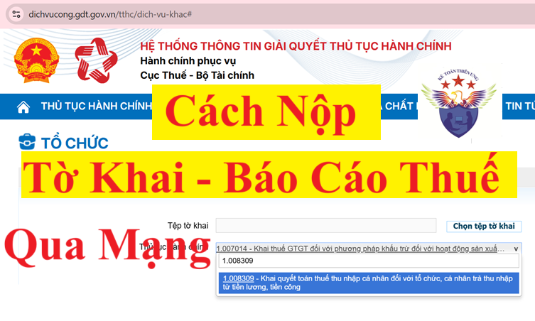
1. Tờ khai thuế muốn nộp qua mạng
Các bạn lập tờ khai thuế trên phần mềm HTKK => Rồi Kết xuất tờ khai thuế ở dạng XML (Lưu vào 1 thư mục (Folder) nào đó trên máy tính => để tải lên trên hệ thống khi nộp)
2. Cắm chữ ký số (USB Token) vào máy tính
Dưới đây, Công ty đào tạo Kế Toán Diệu Tâm sẽ hướng dẫn các bạn thực hiện nộp các loại tờ khai báo cáo thuế như tờ khai lệ phí môn bài, tờ khai thuế GTGT, TNCN, TNDN qua mạng trên cả 2 hệ thống: Thuế điện tử và Dịch vụ công
1. Cách nộp tờ khai báo cáo thuế qua mạng trên trang Dịch Vụ Công
Bước 1: Truy cập vào trang https://dichvucong.gdt.gov.vn/
Bước 2: Đăng nhập tài khoản của doanh nghiệp bạn vào hệ thống
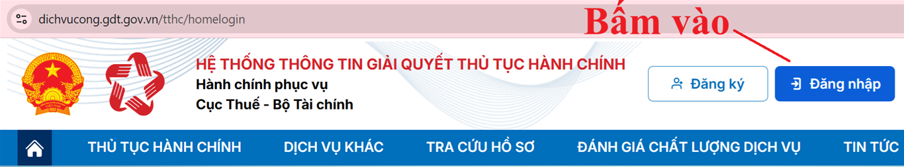
(1) Chọn loại tài khoản bạn muốn sử dụng đăng nhập
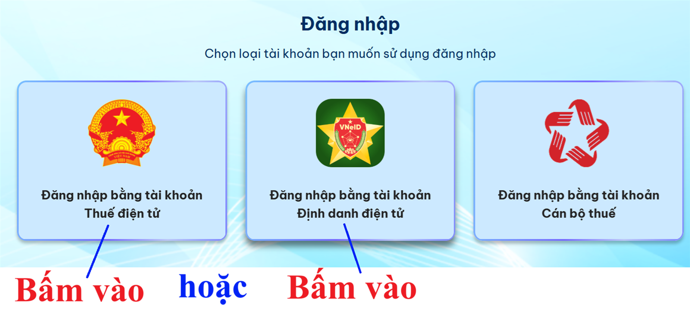
(2) Đối tượng đăng nhập: chọn “Doanh nghiệp”
(3) Thực hiện nhập thông tin đăng nhập:
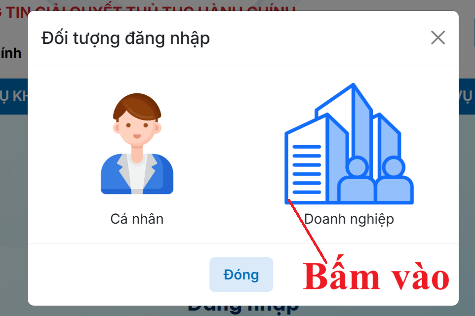
(3) Thực hiện nhập thông tin đăng nhập:
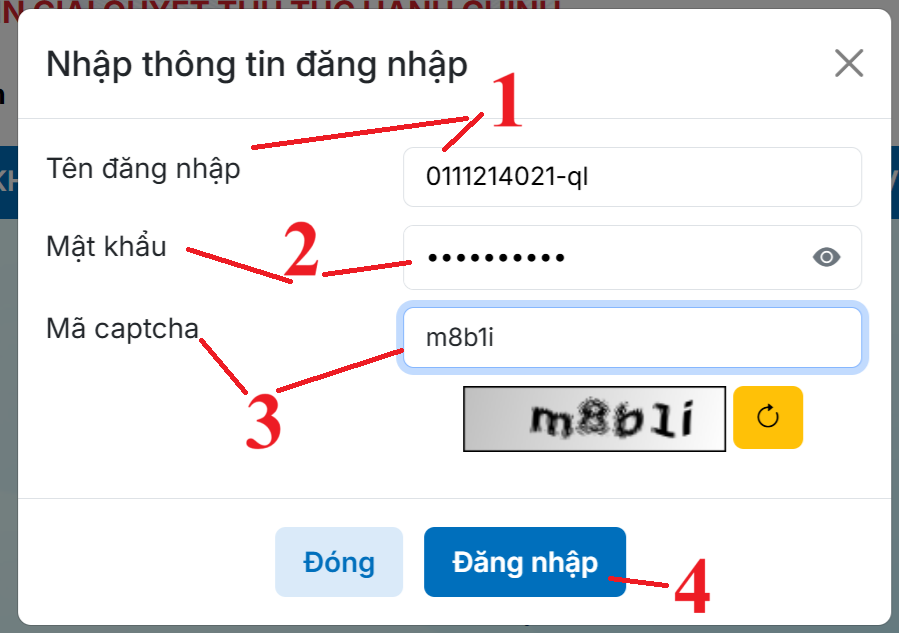
=> Nhập tên tài khoản và mật khẩu của công ty bạn vào hệ thống
=> Nhập Mã captcha
=> Bấm vào “Đăng nhập” để đăng nhập vào HỆ THỐNG THÔNG TIN GIẢI QUYẾT THỦ TỤC HÀNH CHÍNH
Nếu bạn muốn đăng nhập bằng tài khoản Định danh điện tử thì có thể tham khảo chi tiết tại đây:
Bước 3: Tra cứu và chọn mã thủ tục hành chính cho tờ khai muốn nộp
Cách 1: Tra cứu theo tên mẫu tờ khai => Thực hiện tại dòng Tờ khai
Các bạn có thể xem đầy đủ danh sách 215 mã thủ tục hành chính về thuế tại đây:
Danh sách mã thủ tục hành chính khi nộp tờ khai thuế
Bước 4: Chọn tờ khai cần nộp
Sau khi các bạn bấm vào biểu tượng nộp tờ khai tại cột “Nộp hồ sơ”
Thì hệ thống sẽ hiện thị ra bảng chọn tờ khai:
Sau khi chọn xong loại tờ khai cần nộp thì các bạn bấm vào “Tiếp tục”
Bước 5: Chọn hình thức nộp tờ khai:
(1) Chọn hình thức nộp hồ sơ:
+ Nếu bạn đã làm tờ khai thuế trên phần mềm HTKK rồi và đã kết xuất dạng XML từ phần phần mềm HTKK ra rồi thì bạn sẽ bấm chọn vào dòng "Nộp XML" để nộp tờ khai đã làm từ phần mềm HTKK đó qua mạng
+ Còn nếu bạn chưa có tờ khai thuế dạng XML thì bạn sẽ bấm vào dòng "Kê khai trực tuyến" để thực hiện kê khai trực tiếp luôn trên trang Dịch Vụ Công này
(2) Bấm vào “Tiếp tục”
Bước 6: Tải tờ khai lên hệ thống => Ký tờ khai => Nộp tờ khai:
=> Sau đó tiến hành vào phần TRỢ GIÚP => Để tải Phần mềm hỗ trợ ký điện tử TCT SigningHub và Phần mềm hỗ trợ ký điện tử eSigner
Sau khi tải 2 phần mềm hỗ trợ này về máy rồi thì tiến hành cài đặt vào máy tính
Bước 7: Kiểm tra mail
Cách Tra cứu tờ khai báo cáo thuế đã nộp trên trang Dịch Vụ Công:
* Tại dòng "Mã giao dịch": Các bạn có thể tra cứu theo mã giao dịch khi nộp tờ khai (Lấy mã giao dịch này tại mail khi cơ quan thuế gửi tiếp nhận hoặc chấp nhận tờ khai)
* Tại ô "Ngày nộp từ ngày" “Đến ngày": Các bạn có thể tra cứu theo 1 khoảng thời gian nộp tờ khai nào đó thì các bạn hãy nhập thời gian từ ngày đến ngày
=> Sau khi chọn xong điều kiện thì các bạn bấm vào "Tìm kiếm"
2. Cách nộp tờ khai báo cáo thuế qua mạng trên trang Thuế điện tử
Cách 1: Tra cứu theo tên mẫu tờ khai => Thực hiện tại dòng Tờ khai
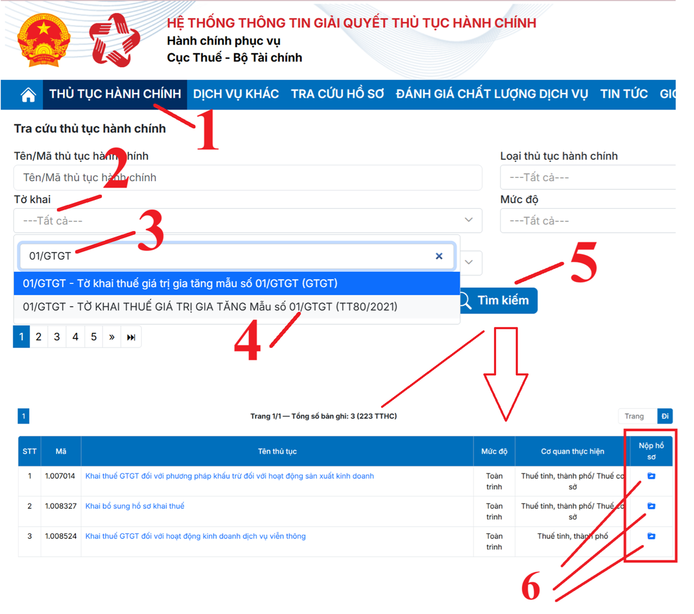
(1) Bấm vào chức năng “THỦ TỤC HÀNH CHÍNH”
(2) Bấm vào dòng Tờ khai để tìm kiếm tờ khai cần nộp
(3) Gõ tên mẫu số tờ khai cần nộp (Muốn nộp loại tờ khai nào thì gõ tên mẫu số của loại tờ khai đó)
(4) Bấm chọn loại tờ khai cần nộp
(5) Bấm vào Tìm kiếm để hệ thống tra cứu thủ tục hành chính của loại tờ khai cần nộp
(6) Bấm vào dòng của thủ tục hành chính cần thực hiện
(2) Bấm vào dòng Tờ khai để tìm kiếm tờ khai cần nộp
(3) Gõ tên mẫu số tờ khai cần nộp (Muốn nộp loại tờ khai nào thì gõ tên mẫu số của loại tờ khai đó)
(4) Bấm chọn loại tờ khai cần nộp
(5) Bấm vào Tìm kiếm để hệ thống tra cứu thủ tục hành chính của loại tờ khai cần nộp
(6) Bấm vào dòng của thủ tục hành chính cần thực hiện
Ví dụ: Muốn thực hiện nộp tờ khai điều chỉnh bổ sung tờ khai thuế GTGT thì tại cột “Nộp hồ sơ” sẽ bấm vào dòng số 2 với Mã thủ tục hành chính là 1.008327, tên thủ tục hành chính là Khai bổ sung hồ sơ khai thuế
Cách 2: Tra cứu theo mã thủ tục hành chính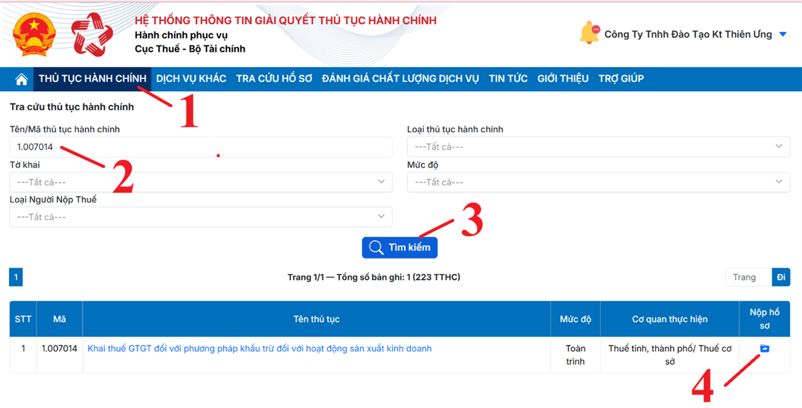
ư| Một vài mã thủ tục hành chính thường dùng để nộp tờ khai báo cáo thuế | ||
| Mã thủ tục hành chính | Tên thủ tục hành chính | Mẫu tờ khai |
| 1.007014 | Khai thuế GTGT đối với phương pháp khấu trừ đối với hoạt động sản xuất kinh doanh | Mẫu 01/GTGT |
| 1.007022 | Khai thuế giá trị gia tăng đối với phương pháp trực tiếp trên doanh thu | Mẫu số 04/GTGT |
| 2.002235 | Khai thuế thu nhập cá nhân tháng/quý của tổ chức, cá nhân trả thu nhập khấu trừ thuế đối với tiền lương, tiền công | Mẫu 05/KK-TNCN |
| 1.008346 | Khai quyết toán thuế thu nhập doanh nghiệp theo phương pháp doanh thu - chi phí | Mẫu 03/TNDN |
| 1.008309 | Khai quyết toán thuế thu nhập cá nhân đối với tổ chức, cá nhân trả thu nhập từ tiền lương, tiền công | Mẫu 05/QTT-TNCN |
| 1.008327 | Khai bổ sung hồ sơ khai thuế | Mẫu 01/KHBS |
| 1.007016 | Khai thuế Giá trị gia tăng đối với phương pháp trực tiếp trên giá trị gia tăng | Mẫu 03/GTGT |
Các bạn có thể xem đầy đủ danh sách 215 mã thủ tục hành chính về thuế tại đây:
Danh sách mã thủ tục hành chính khi nộp tờ khai thuế
Bước 4: Chọn tờ khai cần nộp
Sau khi các bạn bấm vào biểu tượng nộp tờ khai tại cột “Nộp hồ sơ”
Thì hệ thống sẽ hiện thị ra bảng chọn tờ khai:
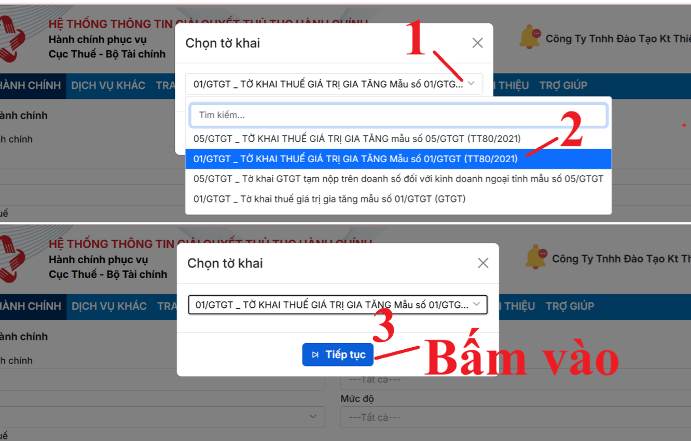
Sau khi chọn xong loại tờ khai cần nộp thì các bạn bấm vào “Tiếp tục”
Bước 5: Chọn hình thức nộp tờ khai:
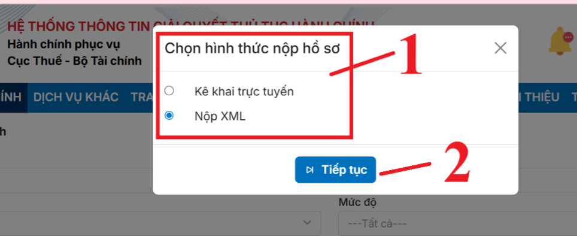
(1) Chọn hình thức nộp hồ sơ:
+ Nếu bạn đã làm tờ khai thuế trên phần mềm HTKK rồi và đã kết xuất dạng XML từ phần phần mềm HTKK ra rồi thì bạn sẽ bấm chọn vào dòng "Nộp XML" để nộp tờ khai đã làm từ phần mềm HTKK đó qua mạng
+ Còn nếu bạn chưa có tờ khai thuế dạng XML thì bạn sẽ bấm vào dòng "Kê khai trực tuyến" để thực hiện kê khai trực tiếp luôn trên trang Dịch Vụ Công này
(2) Bấm vào “Tiếp tục”
Bước 6: Tải tờ khai lên hệ thống => Ký tờ khai => Nộp tờ khai:
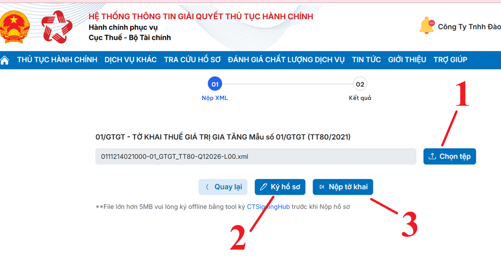
(1) Bấm vào “Chọn tệp” để tải tờ khai lên
=> Hệ thống trang web sẽ hiển thị cửa sổ mở file để các bạn chọn file đã kết xuất từ phần mềm HTKK
(2) Ký điện tử
=> Sau khi các bạn đã tải được tờ khai thuế muốn nộp lên hệ thống thì các bạn thực hiện bấm vào: "Ký điện tử"
=> Hệ thống hiển thị cửa sổ yêu cầu nhập mã PIN
=> Các bạn nhập mã PIN đúng và chọn nút “Chấp nhận” => Hệ thống báo ký điện tử thành công
=> Hệ thống hiển thị cửa sổ yêu cầu nhập mã PIN
=> Các bạn nhập mã PIN đúng và chọn nút “Chấp nhận” => Hệ thống báo ký điện tử thành công
Lưu ý: Nếu khi bấm vào "Nộp tờ khai" mà màn hình hiện thị ra thông báo "Chưa cài đặt hoặc bật Plugin chữ ký số"
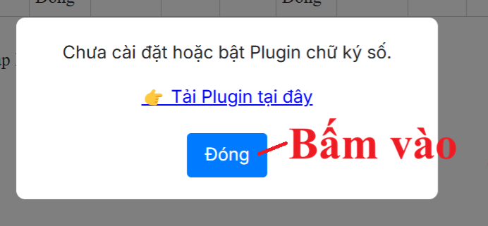
Các bạn bấm vào “Đóng”
=> Sau đó tiến hành vào phần TRỢ GIÚP => Để tải Phần mềm hỗ trợ ký điện tử TCT SigningHub và Phần mềm hỗ trợ ký điện tử eSigner
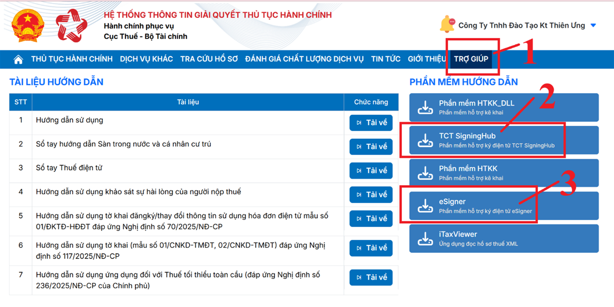
Sau khi tải 2 phần mềm hỗ trợ này về máy rồi thì tiến hành cài đặt vào máy tính
=> Cài đặt xong thì tiến hành đăng xuất tài khoản khỏi dịch vụ công rồi lại tiến hành đăng nhập lại
=> Sau khi đăng nhập lại thì tiến hành nộp lại hồ sơ (thực hiện lại từ đầu (từ bước 5))
=> Sau khi đăng nhập lại thì tiến hành nộp lại hồ sơ (thực hiện lại từ đầu (từ bước 5))
(3) Nộp tờ khai
=> Sau khi đã ký điện tử thành công, các bạn tiến hành nộp tờ khai qua mạng bằng cách bấm vào “Nộp tờ khai” để gửi tờ khai tới Cơ quan thuế.
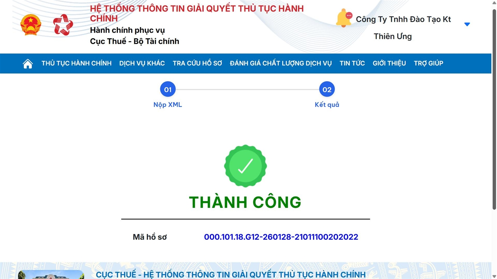
Bước 7: Kiểm tra mail
Ngay sau khi bạn nộp tờ khai thành công thì sẽ có 1 thông báo Tiếp nhận hồ sơ khai thuế điện tử gửi vào mail đã đăng ký nhận thông tin của doanh nghiệp bạn với tiêu đều "Thong bao thue" để xác nhận ngày giờ cơ quan thuế tiếp nhận hồ sơ khai thuế.
Hồ sơ khai thuế điện tử sẽ được cơ quan thuế tiếp tục kiểm tra và trả Thông báo về việc chấp nhận hay không chấp nhận trong thời gian 01 ngày làm việc kể từ thời điểm cơ quan thuế tiếp nhận hồ sơ khai thuế điện tử.
(Thông báo về việc chấp nhận hay không chấp nhận tờ khai thuế này cũng sẽ được gửi vào mail đã đăng ký nhận thông tin của doanh nghiệp bạn)
Hồ sơ khai thuế điện tử sẽ được cơ quan thuế tiếp tục kiểm tra và trả Thông báo về việc chấp nhận hay không chấp nhận trong thời gian 01 ngày làm việc kể từ thời điểm cơ quan thuế tiếp nhận hồ sơ khai thuế điện tử.
(Thông báo về việc chấp nhận hay không chấp nhận tờ khai thuế này cũng sẽ được gửi vào mail đã đăng ký nhận thông tin của doanh nghiệp bạn)
Cách Tra cứu tờ khai báo cáo thuế đã nộp trên trang Dịch Vụ Công:
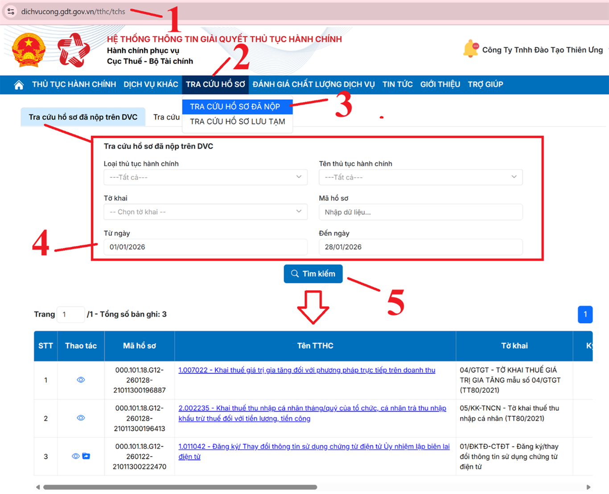
(1) đăng nhập vào trang: https://dichvucong.gdt.gov.vn
(2) Bấm vào chức năng “TRA CỨU HỒ SƠ”
(3) Bấm chọn vào dòng “TRA CỨU HỒ SƠ ĐÃ NỘP”
(4) Chọn điều kiện tra cứu:
=> Hệ thống trang web sẽ hiển thị ra các trường thông tin về điều kiện tra cứu
Các bạn hãy chọn theo tiêu trí mà bạn muốn tra cứu:
* Tại dòng "Tờ khai"
(2) Bấm vào chức năng “TRA CỨU HỒ SƠ”
(3) Bấm chọn vào dòng “TRA CỨU HỒ SƠ ĐÃ NỘP”
(4) Chọn điều kiện tra cứu:
=> Hệ thống trang web sẽ hiển thị ra các trường thông tin về điều kiện tra cứu
Các bạn hãy chọn theo tiêu trí mà bạn muốn tra cứu:
* Tại dòng "Tờ khai"
+ Nếu bạn muốn tra cứu riêng 1 loại tờ khai nào thì bạn sẽ bấm vào mũi tên chỉ xuống để chọn loại tờ khai cần tra cứu đó
+ Nếu bạn muốn tra cứu nhiều loại tờ khai khác nhau thì các bạn để mặc định là "Tất cả"
+ Nếu bạn muốn tra cứu nhiều loại tờ khai khác nhau thì các bạn để mặc định là "Tất cả"
* Tại dòng "Mã giao dịch": Các bạn có thể tra cứu theo mã giao dịch khi nộp tờ khai (Lấy mã giao dịch này tại mail khi cơ quan thuế gửi tiếp nhận hoặc chấp nhận tờ khai)
* Tại ô "Ngày nộp từ ngày" “Đến ngày": Các bạn có thể tra cứu theo 1 khoảng thời gian nộp tờ khai nào đó thì các bạn hãy nhập thời gian từ ngày đến ngày
(Lưu ý: Ngoại trừ ô ô "Ngày nộp từ ngày" “Đến ngày" thì các ô còn lại không bắt buộc phải chọn các điều kiện tra cứu)
=> Sau khi chọn xong điều kiện thì các bạn bấm vào "Tìm kiếm"
2. Cách nộp tờ khai báo cáo thuế qua mạng trên trang Thuế điện tử
Bước 1: Truy cập vào website: https://thuedientu.gdt.gov.vn
(bằng trình duyệt Internet Explorer, Firefox, Cốc cốc hoặc trình duyệt Chrome đều được)
Bước 2: Đăng nhập vào hệ thống thuế điện tử trên trang thuedientu.gdt.gov.vn
=> Tại phần Đăng nhập hệ thống thuế điện tử các bạn bấm vào "Doanh Nghiệp"
=> Sau đó bạn kéo thanh dọc lên banner của website sẽ có mục "Đăng Nhập" => các bạn bấm vào đó
=> Lúc này hệ thống yêu cầu các bạn nhập thông tin về "Tên đăng nhập" và "Mật khẩu" và Mã xác nhận
Cách xác định tài khoản đăng nhập như sau:
Đối với tên đăng nhập: Là MST hoặc MST-QL (Với MST là Mã số thuế của công ty các bạn)
| Tên đăng nhập Dạng | Sử dụng để |
|
MST (Ví dụ: 0112456835) |
Sử dụng được các chức năng: Khai thuế, Hoàn thuế, Tra cứu, Hỏi đáp. |
|
MST-QL (không phân biệt viết hoa viết thường) (Ví dụ: 0112456835-QL) |
Dùng để quản lý Dùng được tất cả các chức năng: Khai thuế, Hoàn thuế, Nộp thuế, Tra cứu, Quản lý và phân quyền tài khoản, Hỏi đáp. |
|
MST-NT (Ví dụ: 0112456835-NT) |
Dùng để nộp tiền thuế |
Lưu ý với các bạn rằng:
Nếu tên đăng nhập các bạn chỉ để nguyên là MST mà không có đuôi “-QL” thì khi đăng nhập vào trang thuedientu sẽ không có chức năng Nộp thuế. Các bạn chỉ nộp được tờ khai thuế thôi, không nộp được tiền thuế, không nộp được tờ khai đăng ký MST TNCN
Bước 3: Đăng ký hoặc kiểm tra loại tờ khai cần nộp qua mạng
Để đăng ký thêm tờ khai hoặc kiểm tra xem tờ khai đã được đăng ký hay chưa thì bạn thực hiện: Bấm vào Menu Khai thuế => Sau đó chọn chức năng Đăng ký tờ khai
Hệ thống trang web sẽ hiện thị ra "Danh sách tờ khai đã đăng ký nộp qua mạng"
=> Các bạn sẽ kiểm tra đối chiếu với loại tờ khai thuế mà doanh nghiệp của bạn đang muốn nộp:
Hệ thống trang web sẽ hiện thị ra "Danh sách tờ khai đã đăng ký nộp qua mạng"
=> Các bạn sẽ kiểm tra đối chiếu với loại tờ khai thuế mà doanh nghiệp của bạn đang muốn nộp:
+ Trường hợp 1: Nếu loại tờ khai thuế đó đã được đăng ký (Có tên tờ khai đó trong "Danh sách tờ khai đã đăng ký nộp qua mạng") thì các bạn ấn vào Menu "Khai thuế" để qua trở lại mục Khai thuế để tiến hành nộp tờ khai.
+ Trường hợp 2: Nếu loại tờ khai thuế đó chưa được đăng ký (Chưa có tên tờ khai đó trong "Danh sách tờ khai đã đăng ký nộp qua mạng") thì các bạn các bạn cần thực hiện đăng ký như sau:
(1) Các bạn kéo xuống dưới cùng của hệ thống trang web => Rồi bấm vào "Đăng ký thêm tờ khai"
-> Thì hệ thống trang web sẽ hiện thị ra danh sách các tờ khai mà DN của các bạn chưa thực hiện đăng ký
(2) Các bạn tìm đến dòng loại tờ khai mà doanh nghiệp các bạn muốn đăng ký thêm để nộp qua mạng => Sau đó lựa chọn thông tin cho các cột "Loại kỳ kê khai" và "Kỳ bắt đầu" => Rồi bấm tích chọn vào cột "Chọn" của dòng loại tờ khai đó
(Lưu ý: Có thể đăng ký nhiều loại tờ khai khác nhau cùng 1 lần => Bạn hãy tích chọn vào các loại tờ khai mà doanh nghiệp bạn cần kê khai để lần sau không phải đăng ký thêm nữa)
(3) Sau khi đã tích chọn vào dòng của loại tờ khai cần đăng ký thêm rồi thì bạn hãy kéo chuột xuống cuối trang web => Rồi bấm vào "Tiếp tục" để xác nhận đăng ký
(4) Cuối cùng nhấn vào "Chấp nhận" để hoàn thành đăng ký.
Lưu ý: Việc đăng ký thêm tờ khai chỉ cần thực hiện 1 lần vào lần đầu tiên trước khi nộp tờ khai. Các lần sau khi đã đăng ký loại tờ khai đó rồi thì bỏ qua bước 5 thực hiện luôn bước 6 (không cần phải đăng ký lại nữa)
Bước 4: Nộp tờ khai
(1) Bấm vào menu “Khai thuế”
(2) Bấm chọn chức năng “Nộp tờ khai XML”
(2) Bấm chọn chức năng “Nộp tờ khai XML”
=> Hệ thống trang web sẽ hiển thị màn hình Nộp tờ khai thuế định dạng XML
(3) Bấm vào “Chọn tệp tờ khai” để tải tờ khai lên
=> Hệ thống trang web sẽ hiển thị cửa sổ mở file để các bạn chọn file đã kết xuất từ phần mềm HTKK
(4) Ký điện tử
=> Sau khi các bạn đã tải được tờ khai thuế muốn nộp lên hệ thống thì các bạn thực hiện bấm vào: "Ký điện tử"
=> Hệ thống hiển thị cửa sổ yêu cầu nhập mã PIN
=> Các bạn nhập mã PIN đúng và chọn nút “Chấp nhận” => Hệ thống báo ký điện tử thành công
=> Hệ thống hiển thị cửa sổ yêu cầu nhập mã PIN
=> Các bạn nhập mã PIN đúng và chọn nút “Chấp nhận” => Hệ thống báo ký điện tử thành công
(5) Nộp tờ khai
=> Sau khi đã ký điện tử thành công, các bạn tiến hành nộp tờ khai qua mạng bằng cách bấm vào “Nộp tờ khai” để gửi tờ khai tới Cơ quan thuế.
=> Hệ thống hiển thị danh sách tờ khai đã gửi tới Cơ quan thuế
=> Hệ thống hiển thị danh sách tờ khai đã gửi tới Cơ quan thuế
Bước 5: Kiểm tra mail
Ngay sau khi bạn nộp tờ khai thành công thì sẽ có 1 thông báo Tiếp nhận hồ sơ khai thuế điện tử gửi vào mail đã đăng ký nhận thông tin của doanh nghiệp bạn với tiêu đều "Thong bao thue" để xác nhận ngày giờ cơ quan thuế tiếp nhận hồ sơ khai thuế.
Hồ sơ khai thuế điện tử sẽ được cơ quan thuế tiếp tục kiểm tra và trả Thông báo về việc chấp nhận hay không chấp nhận trong thời gian 01 ngày làm việc kể từ thời điểm cơ quan thuế tiếp nhận hồ sơ khai thuế điện tử.
(Thông báo về việc chấp nhận hay không chấp nhận tờ khai thuế này cũng sẽ được gửi vào mail đã đăng ký nhận thông tin của doanh nghiệp bạn)
Hồ sơ khai thuế điện tử sẽ được cơ quan thuế tiếp tục kiểm tra và trả Thông báo về việc chấp nhận hay không chấp nhận trong thời gian 01 ngày làm việc kể từ thời điểm cơ quan thuế tiếp nhận hồ sơ khai thuế điện tử.
(Thông báo về việc chấp nhận hay không chấp nhận tờ khai thuế này cũng sẽ được gửi vào mail đã đăng ký nhận thông tin của doanh nghiệp bạn)
Cách Tra cứu tờ khai báo cáo thuế đã nộp qua mạng:
Các bạn vẫn đăng nhập vào Website của Cơ quan thuế: thuedientu.gdt.gov.vn
(1) Bấm vào menu “Khai thuế”
(2) Bấm chọn chức năng “Tra cưu tờ khai”
=> Hệ thống trang web sẽ hiển thị ra các trường thông tin về điều kiện tra cứu
Các bạn hãy chọn theo tiêu trí mà mình muốn tra cứu:
* Tại dòng "Tờ khai"
+ Nếu bạn muốn tra cứu riêng 1 loại tờ khai nào thì bạn sẽ bấm vào mũi tên chỉ xuống để chọn loại tờ khai cần tra cứu đó
+ Nếu bạn muốn tra cứu nhiều loại tờ khai khác nhau thì các bạn để mặc định là "Tất cả"
* Tại dòng "Mã giao dịch": Các bạn có thể tra cứu theo mã giao dịch khi nộp tờ khai (Lấy mã giao dịch này tại mail khi cơ quan thuế gửi tiếp nhận hoặc chấp nhận tờ khai)
* Tại ô "Ngày nộp từ ngày" “Đến ngày": Các bạn có thể tra cứu theo 1 khoảng thời gian nộp tờ khai nào đó thì các bạn hãy nhập thời gian từ ngày đến ngày
=> Sau khi chọn xong điều kiện thì các bạn bấm vào "Tra cứu"
(Lưu ý: Ngoại trừ ô ô "Ngày nộp từ ngày" “Đến ngày" thì các ô còn lại không bắt buộc phải chọn các điều kiện tra cứu)
Các bạn hãy chọn theo tiêu trí mà mình muốn tra cứu:
* Tại dòng "Tờ khai"
+ Nếu bạn muốn tra cứu riêng 1 loại tờ khai nào thì bạn sẽ bấm vào mũi tên chỉ xuống để chọn loại tờ khai cần tra cứu đó
+ Nếu bạn muốn tra cứu nhiều loại tờ khai khác nhau thì các bạn để mặc định là "Tất cả"
* Tại dòng "Mã giao dịch": Các bạn có thể tra cứu theo mã giao dịch khi nộp tờ khai (Lấy mã giao dịch này tại mail khi cơ quan thuế gửi tiếp nhận hoặc chấp nhận tờ khai)
* Tại ô "Ngày nộp từ ngày" “Đến ngày": Các bạn có thể tra cứu theo 1 khoảng thời gian nộp tờ khai nào đó thì các bạn hãy nhập thời gian từ ngày đến ngày
=> Sau khi chọn xong điều kiện thì các bạn bấm vào "Tra cứu"
(Lưu ý: Ngoại trừ ô ô "Ngày nộp từ ngày" “Đến ngày" thì các ô còn lại không bắt buộc phải chọn các điều kiện tra cứu)